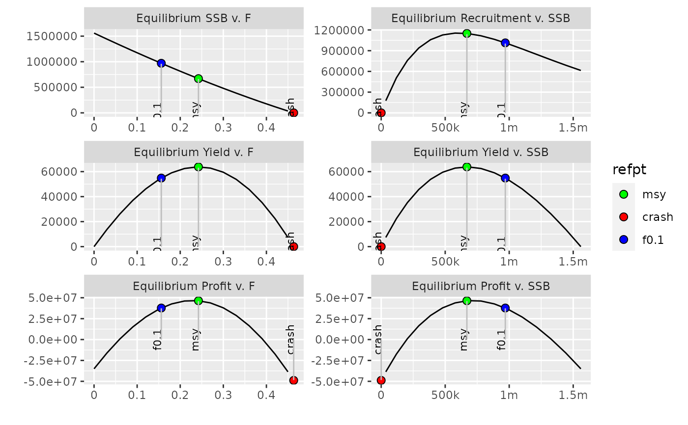

Fit an FLBRP object
brp.RdThis method carries out the necessary calculation to obtain the reference
points for an object of class FLBRP. Results of the calculation are stored
in @refpts slot of the object, and the object is then returned.
To directly obtain the recalculated refpts slot of an FLBRP object, the
computeRefpts method can be used. This is equivalent to fitting the object
using brp and then extracting the @refpts slot.
The plot method for the FLBRP class will show the relationship between
equilibrium SSB, Yield and Profit against levels of fishing mortality and
that of recruitment, Yield and profit against SSB.
# S4 method for FLBRP brp(object) # S4 method for FLBRP computeRefpts(object) # S4 method for FLBRP,missing plot(x, refpts = c("msy", "mey", "f0.1", "spr.30", "fmax", "crash"), obs = FALSE, ...)
Arguments
| object | An object of class |
|---|---|
| x | An object of class |
| refpts | Reference points to include, defaults to all in standard |
| obs | Should observations be plotted? Defaults to |
Value
An object of class FLBRP with reference points estimated
An object of class ggplot2.
See also
Examples
data(ple4brp) ple4brp <- brp(ple4brp) refpts(ple4brp)#> An object of class "FLPar" #> quant #> refpt harvest yield rec ssb biomass revenue cost #> virgin 0.00e+00 0.00e+00 2.35e+05 1.05e+06 1.09e+06 0.00e+00 3.50e+07 #> msy 2.91e-01 9.47e+04 8.37e+05 4.49e+05 5.74e+05 1.32e+08 4.37e+07 #> crash 7.89e-01 2.11e-06 4.53e-05 4.94e-06 9.90e-06 2.65e-03 5.87e+07 #> f0.1 8.76e-02 5.56e+04 4.29e+05 8.00e+05 8.75e+05 8.20e+07 3.76e+07 #> fmax 1.35e-01 7.36e+04 5.37e+05 6.99e+05 7.89e+05 1.07e+08 3.91e+07 #> spr.30 1.32e-01 7.24e+04 5.29e+05 7.07e+05 7.95e+05 1.05e+08 3.89e+07 #> mey 2.59e-01 9.39e+04 7.86e+05 4.93e+05 6.13e+05 1.32e+08 4.28e+07 #> quant #> refpt profit #> virgin -3.50e+07 #> msy 8.80e+07 #> crash -5.87e+07 #> f0.1 4.44e+07 #> fmax 6.79e+07 #> spr.30 6.64e+07 #> mey 8.91e+07 #> units: NAm(ple4brp)[1:3,] <- 0.2 computeRefpts(ple4brp)#> An object of class "FLPar" #> quant #> refpt harvest yield rec ssb biomass revenue cost #> virgin 0.00e+00 0.00e+00 2.90e+05 9.63e+05 1.01e+06 0.00e+00 3.50e+07 #> msy 2.58e-01 7.82e+04 8.71e+05 4.17e+05 5.37e+05 1.10e+08 4.27e+07 #> crash 6.94e-01 1.65e-06 3.92e-05 4.27e-06 8.45e-06 2.09e-03 5.58e+07 #> f0.1 8.81e-02 4.99e+04 5.16e+05 7.18e+05 7.98e+05 7.35e+07 3.76e+07 #> fmax 1.37e-01 6.49e+04 6.35e+05 6.16e+05 7.11e+05 9.42e+07 3.91e+07 #> spr.30 1.33e-01 6.40e+04 6.26e+05 6.23e+05 7.18e+05 9.30e+07 3.90e+07 #> mey 2.30e-01 7.76e+04 8.28e+05 4.57e+05 5.73e+05 1.10e+08 4.19e+07 #> quant #> refpt profit #> virgin -3.50e+07 #> msy 6.68e+07 #> crash -5.58e+07 #> f0.1 3.58e+07 #> fmax 5.51e+07 #> spr.30 5.40e+07 #> mey 6.77e+07 #> units: NAdata(ple4brp) plot(ple4brp)# ADD observations plot(ple4brp, obs=TRUE)# SELECT which refpts to plot plot(ple4brp, refpts=c("msy", "crash", "f0.1"))# method will only plot existing referenced points refpts(ple4brp) <- refpts(ple4brp)[c("msy", "fmax", "spr.30"),] plot(ple4brp)#> Warning: Removed 77 rows containing missing values (geom_path).